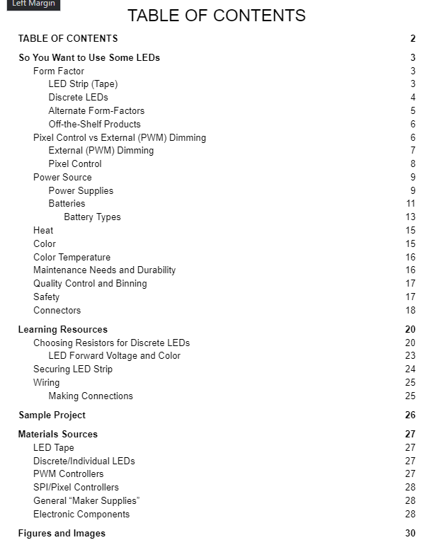
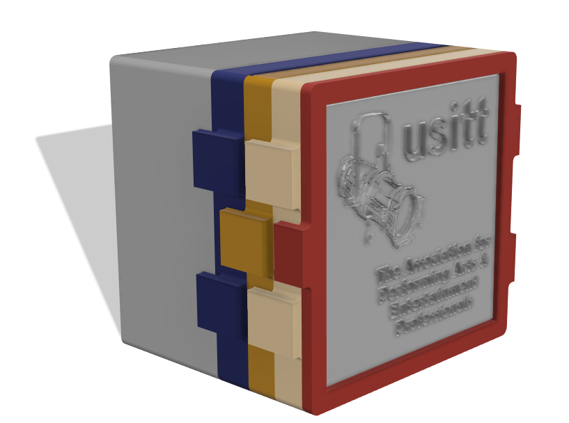

At USITT 2022, I was fortunate enough to present as part of a panel session on Homemade LED Projects. The session focused on introducing electronics makers of all skill levels to the skills and vocabulary they need to make things with LEDs. We covered different LED types, power supplies, wiring methods, safety concerns, design processes, and so much more.
Along with my wonderful teammates - Chris Wood, Lesley Boeckman, and Paul Yeates - we generated a number of resources for this presentation. The most informative of which is the Homemade LED Projects Guidebook. This living document aims to be a comprehensive reference work for working with LEDs in theatrical, installation art, and professional contexts.
As referenced in the guidebook, as a sample project we developed a modular lithophane display box to put LEDs inside. There are five component modules:
All the releveant STL files are available on Prusa Printers.
